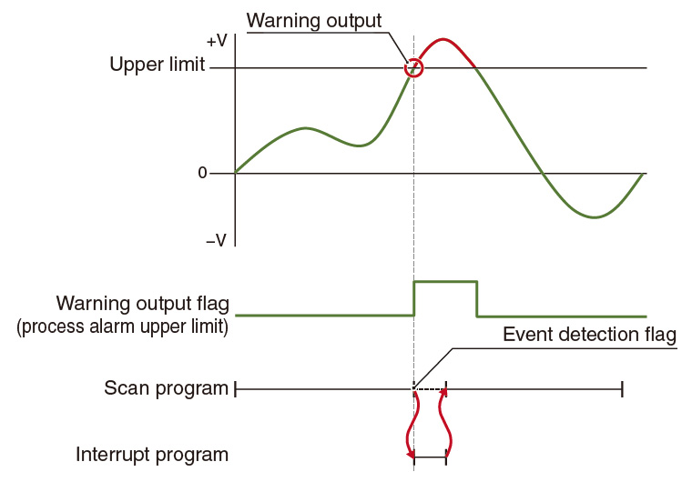

Controllers MELSEC iQ-R Series Fitur Produk -Analog-

Fitur
Penskalaan dan pergeseran nilai digital tanpa program apa pun<sup>InputOutput</sup>
- Tanpa pemrograman
- Pengurangan biaya pengembangan
- Pengurangan ukuran program
- Penskalaan dan pergeseran dapat dengan mudah diatur hanya dengan menggunakan parameter. Tidak diperlukan pemrograman tambahan
- Biaya rekayasa dan ukuran program secara keseluruhan dapat dikurangi

Isolasi saluran galvanik mencegah gangguan listrik seperti arus dan derau<sup>InputOutput</sup>
- Pencegahan gangguan arus dan derau
- Konfigurasi sistem berbiaya rendah
- Modul analog yang diisolasi saluran melindungi komponen modul internal dari korsleting (tanpa memerlukan konverter sinyal) dan karenanya dapat mengonfigurasi sistem yang ringkas dengan biaya rendah

Siklus pengambilan sampel berkecepatan tinggi dan beresolusi tinggi memvisualisasikan perubahan kecil<sup>R60ADH4</sup>
- Pengambilan sampel berkecepatan tinggi
- Resolusi tinggi
- Modul masukan analog berkecepatan tinggi mencapai kecepatan tinggi (1 µs/saluran) dan resolusi tinggi (15 atau Siklus pengambilan sampel (16-bit). Bahkan perubahan kecil pada nilai keluaran sensor dapat diambil sampelnya

Filter penundaan orde pertama yang menghilangkan gangguan frekuensi tinggi<sup>Input</sup>
- Penghapusan gangguan frekuensi tinggi
- Tanpa pemrograman
- Modul analog menyertakan filter penundaan orde pertama yang menghilangkan gangguan gangguan frekuensi tinggi dan meningkatkan akurasi sinyal analog input
- Filter Konstanta waktu dapat dengan mudah diatur menggunakan parameter khusus modul, sehingga meningkatkan waktu pemrosesan karena program pengaturan tambahan (ladder) tidak diperlukan
Pemeliharaan pencegahan yang disederhanakan dengan kinerja yang digerakkan oleh peristiwa<sup>*1</sup><sup>Input</sup>
- Pemeliharaan pencegahan yang mudah
- Tindakan cepat
- Dengan fungsi interupsi yang disempurnakan dengan tanda keluaran peringatan, prosedur interupsi korektif dapat dipicu atau alarm dapat dibuat untuk memulai tindakan pencegahan yang tepat terlepas dari waktu pemindaian program
- *1.Program yang menjalankan proses saat permintaan seperti mengoperasikan tetikus dan menekan tombol diterima. Karena program dapat dijalankan per kejadian, membagi proses dan pengembangan menjadi mudah.

Pengumpulan data berkecepatan tinggi sangat dibutuhkan dalam aplikasi industri<sup>Input</sup>
- Pengumpulan data berkecepatan tinggi
- Identifikasi kesalahan
- Dilengkapi dengan fungsi pencatatan yang mengumpulkan data input analog dengan kecepatan tinggi, sejumlah besar data (hingga 10k poin) dapat disimpan per saluran
- Pengumpulan data dapat dihentikan pada waktu yang ditentukan dalam program atau status data berubah sebagai pemicu penahanan, yang memungkinkan identifikasi kesalahan dan pengumpulan data pengujian dengan mudah
- Pencatatan data dapat digunakan dalam aplikasi seperti jalur inspeksi motor, di mana kinerja motor dapat dicatat pada kecepatan tinggi dan nilai-nilai tertentu seperti tegangan, arus, torsi, dan kecepatan putar dianalisis melalui perbandingan dengan pola pengujian yang berbeda
Modul masukan analog yang mendukung pemancar 2-kabel<sup>R60AD6-DG</sup>
- Didukung pemancar 2-kabel
- Pengurangan waktu henti
- Modul masukan analog yang diisolasi saluran dapat memasok daya ke pemancar 2-kabel, sehingga menghilangkan catu daya khusus
- Pasokan daya ke pemancar 2-kabel dapat dihentikan sementara untuk setiap saluran bahkan ketika terjadi kegagalan, sehingga memungkinkan pemeliharaan tanpa menghentikan sistem, sehingga mengurangi waktu henti

HART<span class="ff-nsj">®</span> protokol komunikasi memungkinkan komunikasi dengan perangkat lapangan<sup>R60ADI8-HA</sup>
- Komunikasi HART® didukung
- Registrasi jarak jauh dari master
- Protokol komunikasi HART® yang mendukung modul input analog dapat melakukan input sinyal analog serta diagnostik perangkat dengan komunikasi HART®, oleh karena itu perawatan sistem menjadi mudah
- Berbagai perintah seperti registrasi parameter perangkat lapangan pendukung komunikasi HART® dapat diatur dari jarak jauh dari protokol komunikasi HART® yang mendukung modul input analog

Keluaran sinyal gelombang pradefinisi yang lebih cepat dan halus<sup>Keluaran</sup>
- Keluaran bentuk gelombang yang telah terdaftar sebelumnya
- Pemrograman yang dikurangi
- Modul keluaran analog memungkinkan bentuk gelombang yang telah terdaftar sebelumnya dengan mudah, mewujudkan keluaran berkelanjutan yang lebih halus pada kecepatan tinggi daripada program
- Mendaftarkan bentuk gelombang dalam modul memungkinkan kontrol bentuk gelombang analog
- Program keluaran analog khusus seperti untuk kontrol berkelanjutan tidak diperlukan, yang selanjutnya mengurangi waktu pemrograman